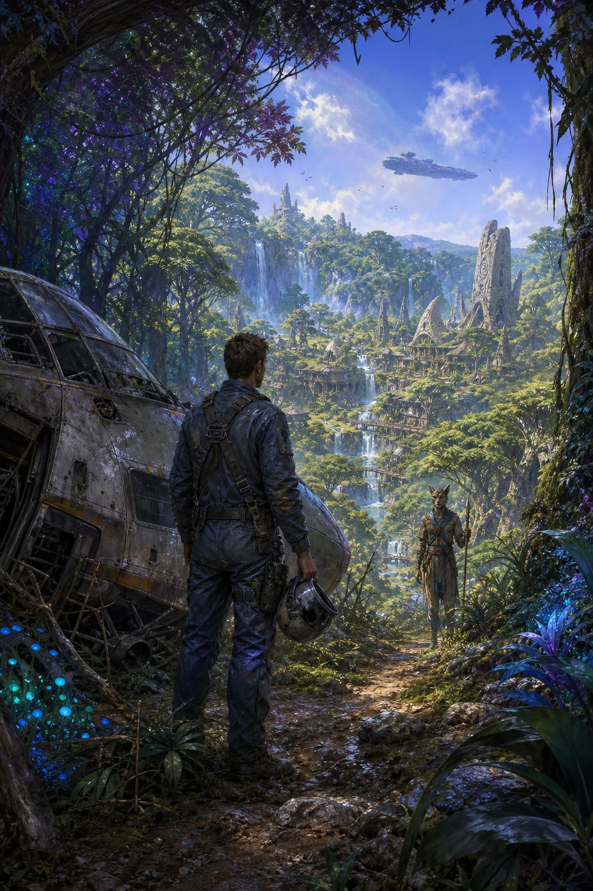

Mission briefing · Survey vessel Toronto
A routine mineral survey becomes a fight for a living world.
Tom Driscoll reaches the planet that DDT calls “Nugget” and finds Albion: inhabited, ancient, and threatened by the same expedition that brought him there. This guide joins the route, people, lore, magic, and markets into one campaign desk.

The road ahead
Four movements across Albion
Your checklist progress follows you from the opening on Toronto through the final return.
Field desks
Use the reference when the route calls for it
The Almanac, Magic, and Trade stay—but now point back to the relevant map and chapter.
The Crew's Path
Assemble your team to save Albion. From the Toronto spaceship to the alien Iskai lands, choose your companions wisely.
Select Character
Recommended Party Compositions
⚖️ Balanced
Tom, Drirr, Sira, Melthas, Siobhan, Harriet
Mix of physical power and magical utility. Best for first-time players.
✨ Magic-Heavy
Tom, Drirr, Sira, Melthas, Khunag, Harriet
Maximizes spellcasting. Khunag is required for Kenget Kamulos chapter.
⚔️ Combat-Focused
Tom, Drirr, Siobhan, Melthas, Joe, Harriet
Raw damage and tech. Joe simplifies the endgame significantly.
⚠️ Key Decision: Siobhan and Khunag are initially mutually exclusive. You can recruit both later, but Khunag is required to enter Kenget Kamulos.
Walkthrough
A chapter-by-chapter route through Albion, connected directly to the exact game maps and named NPCs.
Screenshots
A small gallery to get a feel for Albion’s UI, exploration, and combat.
Albion Almanac
A route-aware field reference for important equipment and encounters. Open the exact map or the chapter where each entry matters.
Equipment Registry
| Item | Type | Effect | Location | Route |
|---|
Xenobiological Data
The Four Schools of Magic
The four spell traditions, their teachers, and the campaign moments where each school earns its place in the party.
World Atlas
Explore Albion exactly as it is stored in the original game—from continental wilderness maps to guilds, homes, fortresses, and the Toronto.
Recovered cartography
Enter every city, guild, home, cave, and floor
The atlas decodes Albion’s original tile layers, first-person floor grids, palettes, NPC waypoints, and doorway event chains. Gold doors open destinations; cyan pins identify named people.
Trade Ledger
Verified shop multipliers and optional money routes, connected to their cities and campaign chapters.
Market Prices by Location
| Location | Sell % | Buy % | Notes | Route |
|---|